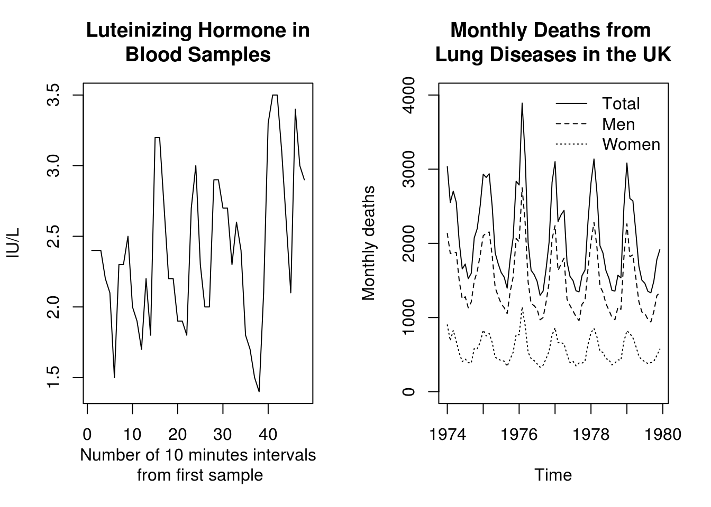
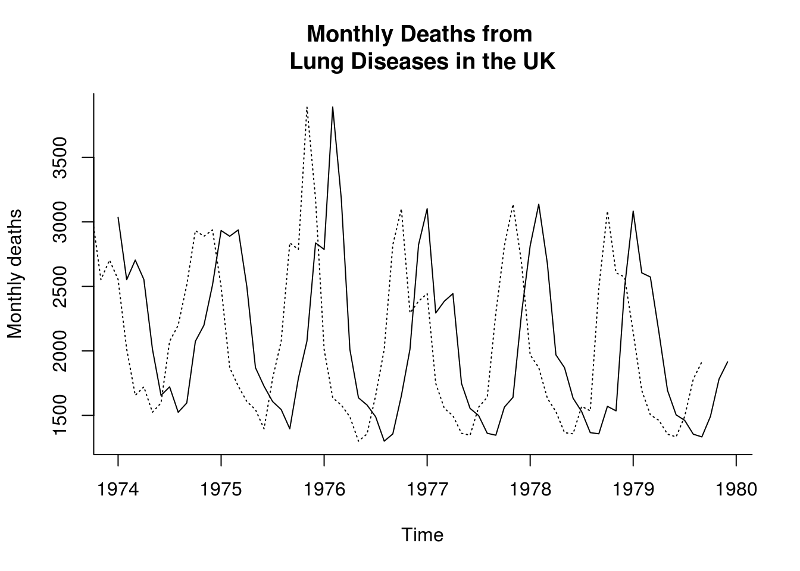
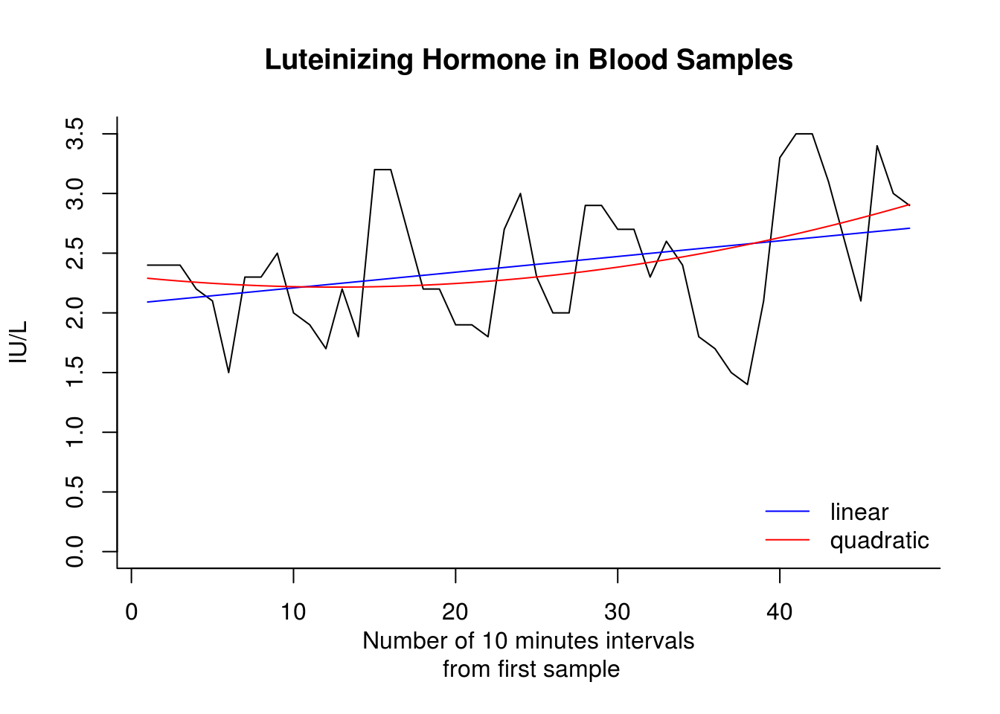

1.2 Introduction to the basic time series functions
The first example we are going to handle is lh, a time series of 48 observations at 10-minute intervals on luteinizing hormone levels for a human female. Start by printing it.
lhTime Series:
Start = 1
End = 48
Frequency = 1
[1] 2.4 2.4 2.4 2.2 2.1 1.5 2.3 2.3 2.5 2.0 1.9 1.7 2.2 1.8 3.2 3.2 2.7
[18] 2.2 2.2 1.9 1.9 1.8 2.7 3.0 2.3 2.0 2.0 2.9 2.9 2.7 2.7 2.3 2.6 2.4
[35] 1.8 1.7 1.5 1.4 2.1 3.3 3.5 3.5 3.1 2.6 2.1 3.4 3.0 2.9Look at the information: Start = 1, End = 48 and Frequency = 1.
The second example, deaths, gives monthly deaths in the UK from a set of common lung diseases for the years 1974 to 1979.
data("deaths", package = "MASS")
deaths Jan Feb Mar Apr May Jun Jul Aug Sep Oct Nov Dec
1974 3035 2552 2704 2554 2014 1655 1721 1524 1596 2074 2199 2512
1975 2933 2889 2938 2497 1870 1726 1607 1545 1396 1787 2076 2837
1976 2787 3891 3179 2011 1636 1580 1489 1300 1356 1653 2013 2823
1977 3102 2294 2385 2444 1748 1554 1498 1361 1346 1564 1640 2293
1978 2815 3137 2679 1969 1870 1633 1529 1366 1357 1570 1535 2491
1979 3084 2605 2573 2143 1693 1504 1461 1354 1333 1492 1781 1915Use tsp(deaths) to get Start = 1974, End = 1979.917 and Frequency = 12. You can also access each of these attributes using the functions start(deaths), end(deaths) and frequency(deaths). Use cycle(deaths) to get the position in the cycle of each observation.
Time series can be plotted by plot. The argument lty of the function plot controls the type of the plotted line (solid, dashed, dotted, …). For more details, type ?par (for graphical parameters).
par(mfrow = c(1, 2)) #2 plot side by side
plot(lh, main = "Luteinizing Hormone in\nBlood Samples", ylab = "IU/L", xlab = "Number of 10 minutes intervals\n from first sample")
plot(deaths, main = "Monthly Deaths from \nLung Diseases in the UK", ylab = "Monthly deaths",
ylim = c(0, 4000))
lines(mdeaths, lty = 2)
lines(fdeaths, lty = 3)
legend(x = "topright", bty = "n", legend = c("Total", "Men", "Women"), lty = c(1,
2, 3))
graphics.off() #close consoleAbove, you can see plots of lh and the three series on deaths. In the right-hand plot, the dashed series is for males, the dotted series for females and the solid line for the total.
The functions ts.union and ts.intersect bind together multiple time series which have a common frequency. The time axes are aligned and only observations at times that appear in all the series are retained with ts.intersect; with ts.union the combined series covers the whole range of the components, possibly as NA values.
The function window extracts a sub-series of a single or multiple time series, by specifying start, end or both.
The function lag shifts the time axis of a series back by \(k\) positions (default is k = 1). Thus lag(deaths, k=3) is the series of deaths shifted one quarter into the past.
plot(deaths, main = "Monthly Deaths from \nLung Diseases in the UK", ylab = "Monthly deaths",
bty = "l")
lines(lag(deaths, k = 3), lty = 3)
The function diff takes the difference between a series and its lagged values and so returns a series of length \(n-k\) with values lost from the beginning (if \(k>0\)) or end. Beware: the argument lag (default is lag = 1) is used in the usual sense here, so diff(deaths, lag=3) is equal to deaths - lag(deaths, k=-3)! The function diff has an argument differences which causes the operation to be iterated.
The function aggregate can be used to change the frequency of the time base.
aggregate(deaths, 4, sum) Qtr1 Qtr2 Qtr3 Qtr4
1974 8291 6223 4841 6785
1975 8760 6093 4548 6700
1976 9857 5227 4145 6489
1977 7781 5746 4205 5497
1978 8631 5472 4252 5596
1979 8262 5340 4148 5188aggregate(deaths, 1, sum)Time Series:
Start = 1974
End = 1979
Frequency = 1
[1] 26140 26101 25718 23229 23951 22938aggregate(deaths, 4, mean) Qtr1 Qtr2 Qtr3 Qtr4
1974 2763.667 2074.333 1613.667 2261.667
1975 2920.000 2031.000 1516.000 2233.333
1976 3285.667 1742.333 1381.667 2163.000
1977 2593.667 1915.333 1401.667 1832.333
1978 2877.000 1824.000 1417.333 1865.333
1979 2754.000 1780.000 1382.667 1729.333aggregate(deaths, 1, mean)Time Series:
Start = 1974
End = 1979
Frequency = 1
[1] 2178.333 2175.083 2143.167 1935.750 1995.917 1911.500One way to compute the linear or polynomial trend of a series is to use the function lm, which fits linear models. The function fitted allows you to extract the model fitted values, while c(1:48) represents the integers from 1 to 48 and the function poly computes orthogonal polynomials.
plot(lh, main = "Luteinizing Hormone in Blood Samples", ylab = "IU/L", xlab = "Number of 10 minutes intervals\n from first sample",
bty = "l", ylim = c(0, 3.5))
lines(fitted(lm(lh ~ c(1:48))), col = "blue")
lines(fitted(lm(lh ~ poly(1:48, 2))), col = "red")
legend(x = "bottomright", legend = c("linear", "quadratic"), col = c(4, 2),
lty = c(1, 1), bty = "n")
1.2.1 Exercise 1: Beaver temperature
- Load the
beav2data from the libraryMASS. - Examine the data frame using
summary,head,tail. Query the help with?beav2for a description of the dataset - Transform the temperature data into a time series object and plot the latter.
- Fit a linear model using
lmand the variableactivas factor, viz.lin_mod <- lm(temp~as.factor(activ), data=beav2). Overlay the means on your plot withlines(fitted(lin_mod))replacinglin_modwith yourlmresult. - Inspect the residuals (
resid(lin_mod)) and determine whether there is any evidence of trend or seasonality. - Look at a quantile-quantile (Q-Q) plot to assess normality. You can use the command
qqnormif you don’t want to transform manually the residuals withqqlineor useplot(lin_mod, which=2). - Plot the lag-one residuals at time \(t\) and \(t-1\). Is the dependence approximately linear?